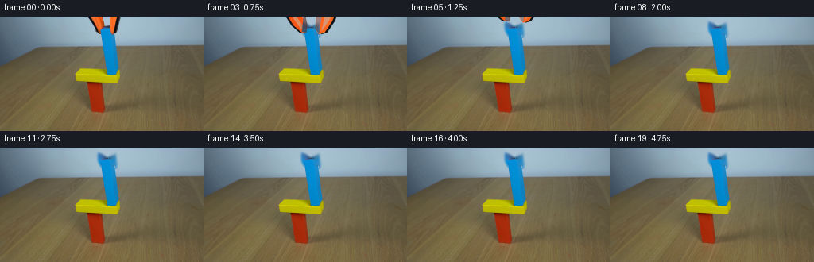
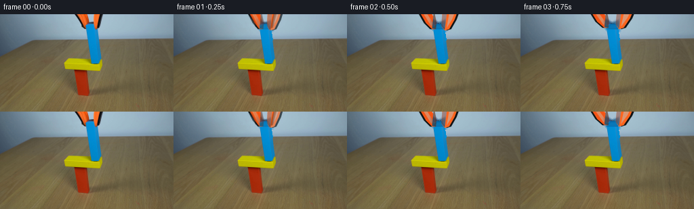
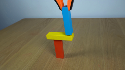
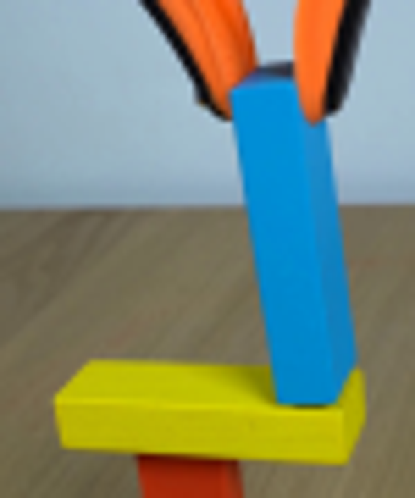
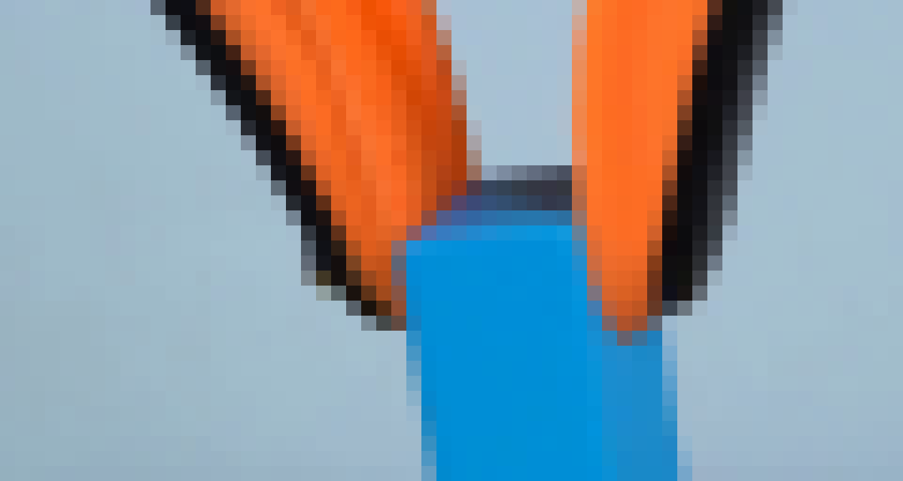
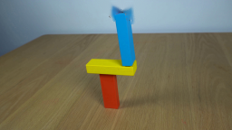
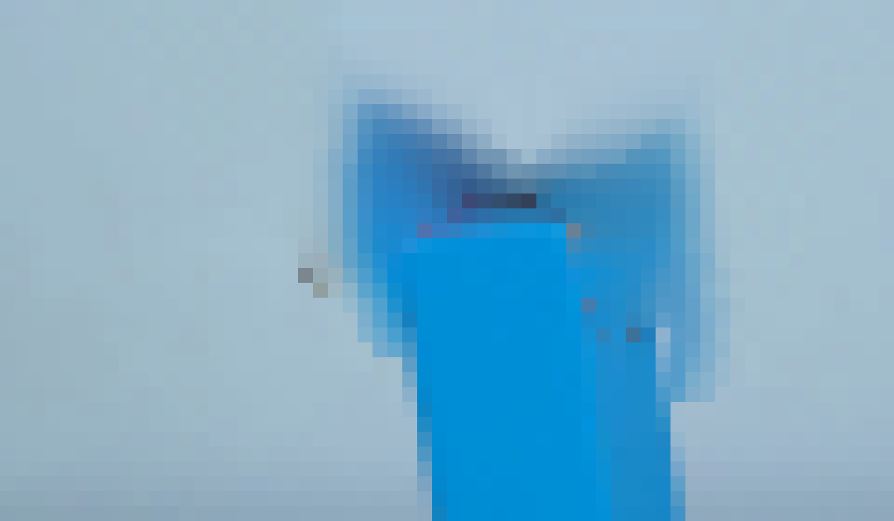
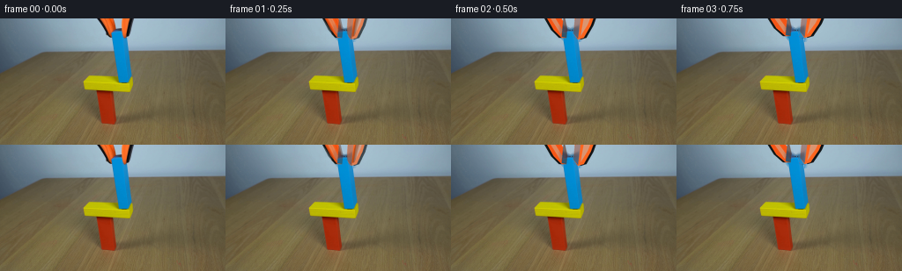

CODING AGENTS AS PIXEL WORLD MODELS
traex/GPT-5.6-Sol · 0183
点击播放 · 原生 RGB 像素
逐轮保存的候选
回放视频、检查图与代码变化。
每份候选均可单独播放。实际图片检查记录在下方工具轨迹中。
候选 01播放与检查图
点击播放 · 原生 RGB 像素

展开代码变化
--- 上一保存版本
+++ 本次保存版本
@@ -0,0 +1,103 @@
+from pathlib import Path
+import cv2
+import numpy as np
+from PIL import Image, ImageDraw
+import artifact_io
+
+CASE_DIR = Path(__file__).resolve().parent
+W, H = 256, 144
+
+
+def smoothstep(x):
+ x = min(1.0, max(0.0, float(x)))
+ return x * x * (3.0 - 2.0 * x)
+
+
+def alpha_paste(dst, rgba):
+ """Alpha composite an RGBA uint8 image onto an RGB uint8 image."""
+ a = rgba[:, :, 3:4].astype(np.float32) / 255.0
+ return np.clip(dst.astype(np.float32) * (1.0 - a) + rgba[:, :, :3].astype(np.float32) * a,
+ 0, 255).astype(np.uint8)
+
+
+def jaw_sprite(side, opening, rise):
+ """Draw one high-resolution jaw at its animated location."""
+ # 4x supersampling yields the same soft photographic contour as the source.
+ S = 4
+ lay = Image.new("RGBA", (W*S, H*S), (0, 0, 0, 0))
+ d = ImageDraw.Draw(lay)
+ # Initial jaws meet the block around x=130 and x=142. They pivot open before rising.
+ if side == "left":
+ pts = [(107 - 13*opening, -15-rise), (126 - 10*opening, -8-rise),
+ (134 - 4*opening, 12-rise), (133 - 4*opening, 22-rise),
+ (128 - 5*opening, 22-rise), (121 - 9*opening, 13-rise)]
+ # black rubberized rear edge, then orange metal face
+ back = [(x-2.8, y) for x,y in pts]
+ d.polygon([(int(x*S),int(y*S)) for x,y in back], fill=(20,22,22,255))
+ orange = pts
+ d.polygon([(int(x*S),int(y*S)) for x,y in orange], fill=(244,85,22,255))
+ # orange highlight and darker inside edge
+ hi=[(111-13*opening,-14-rise),(119-11*opening,-8-rise),(129-5*opening,13-rise),(127-5*opening,18-rise)]
+ d.polygon([(int(x*S),int(y*S)) for x,y in hi], fill=(255,111,40,170))
+ edge=[(130-4*opening,-6-rise),(134-4*opening,12-rise),(133-4*opening,22-rise),(128-5*opening,21-rise)]
+ d.polygon([(int(x*S),int(y*S)) for x,y in edge], fill=(88,44,25,150))
+ else:
+ pts = [(145 + 8*opening, -15-rise), (160 + 13*opening, -14-rise),
+ (154 + 9*opening, 8-rise), (148 + 5*opening, 22-rise),
+ (142 + 4*opening, 24-rise), (137 + 4*opening, 17-rise),
+ (138 + 5*opening, 0-rise)]
+ back=[(x+3.2,y) for x,y in pts]
+ d.polygon([(int(x*S),int(y*S)) for x,y in back], fill=(18,20,22,255))
+ d.polygon([(int(x*S),int(y*S)) for x,y in pts], fill=(255,100,30,255))
+ hi=[(149+8*opening,-14-rise),(157+12*opening,-13-rise),(151+8*opening,7-rise),(145+4*opening,20-rise)]
+ d.polygon([(int(x*S),int(y*S)) for x,y in hi], fill=(255,119,49,150))
+ edge=[(145+5*opening,-4-rise),(142+4*opening,23-rise),(137+4*opening,17-rise),(138+5*opening,1-rise)]
+ d.polygon([(int(x*S),int(y*S)) for x,y in edge], fill=(147,49,18,110))
+ return np.asarray(lay.resize((W,H), Image.Resampling.LANCZOS))
+
+
+def make_clean_plate(src):
+ """Remove the original clamp while preserving the blue block."""
+ bgr = cv2.cvtColor(src, cv2.COLOR_RGB2BGR)
+ mask = np.zeros((H, W), np.uint8)
+ cv2.fillPoly(mask, [np.array([(106,0),(131,0),(135,17),(134,24),(128,24),(121,17)], np.int32)], 255)
+ cv2.fillPoly(mask, [np.array([(137,0),(158,0),(154,9),(150,21),(146,25),(140,24),(137,18)], np.int32)], 255)
+ # Include anti-aliased outer fringe but never erase the strongly blue wooden block.
+ mask = cv2.dilate(mask, np.ones((3,3),np.uint8), iterations=1)
+ blue = (bgr[:,:,0] > 75) & (bgr[:,:,0] > bgr[:,:,1]*1.18) & (bgr[:,:,1] > bgr[:,:,2]*1.10)
+ yy = np.indices(mask.shape)[0]
+ mask[blue & (yy >= 13)] = 0
+ clean = cv2.inpaint(bgr, mask, 4, cv2.INPAINT_TELEA)
+ return cv2.cvtColor(clean, cv2.COLOR_BGR2RGB)
+
+
+def main():
+ src = np.asarray(Image.open(CASE_DIR / "first_frame.png").convert("RGB"), dtype=np.uint8)
+ assert src.shape == (H,W,3)
+ clean = make_clean_plate(src)
+ frames = [src.copy()]
+
+ for i in range(1,20):
+ # At real-time speed: fingers loosen during first second, then lift away.
+ t = i / 4.0
+ opening = smoothstep(t / 1.0)
+ rise = 0.0 if t < 0.55 else 31.0 * smoothstep((t - 0.55) / 1.35)
+
+ frame = clean.copy()
+ # Draw left then right jaw. They do not move the now-supported blue block.
+ frame = alpha_paste(frame, jaw_sprite("left", opening, rise))
+ frame = alpha_paste(frame, jaw_sprite("right", opening, rise))
+
+ # The generated geometry approximates the source closely, but frame 1 is blended
+ # lightly for natural sub-frame acceleration rather than an abrupt synthetic jump.
+ if i == 1:
+ frame = np.clip(src.astype(np.float32)*0.30 + frame.astype(np.float32)*0.70,0,255).astype(np.uint8)
+ frames.append(frame)
+
+ frames = np.stack(frames).astype(np.uint8)
+ assert np.array_equal(frames[0], src)
+ artifact_io.save(frames, CASE_DIR)
+
+
+if __name__ == "__main__":
+ main()
候选 02播放与检查图
点击播放 · 原生 RGB 像素

展开代码变化
--- 上一保存版本
+++ 本次保存版本
@@ -68,7 +68,18 @@
yy = np.indices(mask.shape)[0]
mask[blue & (yy >= 13)] = 0
clean = cv2.inpaint(bgr, mask, 4, cv2.INPAINT_TELEA)
- return cv2.cvtColor(clean, cv2.COLOR_BGR2RGB)
+ clean = cv2.cvtColor(clean, cv2.COLOR_BGR2RGB)
+
+ # The very top edge was occluded by the gripper in frame 00. Reconstruct that
+ # small wooden top face analytically instead of leaving inpainting smears.
+ # It is a narrow, dark-blue trapezoid in perspective above the cyan front face.
+ overlay = Image.new("RGBA", (W*4, H*4), (0,0,0,0))
+ od = ImageDraw.Draw(overlay)
+ od.polygon([(127*4,22*4),(132*4,14*4),(140*4,14*4),(144*4,22*4)], fill=(5,105,169,255))
+ od.polygon([(128*4,21*4),(133*4,16*4),(140*4,16*4),(142*4,21*4)], fill=(8,119,184,255))
+ top = np.asarray(overlay.resize((W,H), Image.Resampling.LANCZOS))
+ clean = alpha_paste(clean, top)
+ return clean
def main():

候选 04播放与检查图
点击播放 · 原生 RGB 像素

展开代码变化
--- 上一保存版本
+++ 本次保存版本
@@ -79,6 +79,14 @@
od.polygon([(128*4,21*4),(133*4,16*4),(140*4,16*4),(142*4,21*4)], fill=(8,119,184,255))
top = np.asarray(overlay.resize((W,H), Image.Resampling.LANCZOS))
clean = alpha_paste(clean, top)
+
+ # Restore a clean right edge for the few rows that were hidden behind the right jaw.
+ # The face widens by about one pixel per eight vertical pixels due to perspective.
+ for y in range(19, 39):
+ right = int(round(142.0 + (y-19)*0.16))
+ left = int(round(127.0 + (y-19)*0.08))
+ srcx = min(right-2, max(left+2, 138))
+ clean[y, right-1:right+2] = clean[y, srcx]
return clean
可观测工具轨迹
实际执行的命令与返回图片。
命令 1exit 0
/bin/bash -lc "cat prompt.txt && printf '\\n--- GENERATION_RULES ---\\n' && cat GENERATION_RULES.md"
命令 2exit 1
/bin/bash -lc "find . -maxdepth 2 -type f -printf '%p\\n' | sort && printf '\\n--- tools ---\\n' && command -v ffmpeg && command -v python3 && python3 - <<'PY'
try:
import cv2; print('cv2',cv2.__version__)
except Exception as e: print('no cv2',e)
try:
from PIL import Image; print('PIL ok')
except Exception as e: print('no PIL',e)
PY"命令 3exit 0
/bin/bash -lc "sed -n '1,240p' artifact_io.py"
命令 4exit 0
/bin/bash -lc "python3 - <<'PY'
from PIL import Image
im=Image.open('first_frame.png')
print(im.mode,im.size)
for p in [(128,0),(130,15),(140,20),(135,35),(100,70),(123,100),(200,100)]: print(p,im.getpixel(p))
PY
printf '\\nBins:\\n'
command -v python3 || true; command -v ffmpeg || true; command -v convert || true"命令 5exit 0
/bin/bash -lc "python3 - <<'PY' mods=['numpy','PIL','cv2','scipy'] for m in mods: try: x=__import__(m); print(m,'ok',getattr(x,'__version__','')) except Exception as e: print(m,'NO',e) PY"
命令 6exit 0
/bin/bash -lc "python3 - <<'PY'
from PIL import Image
im=Image.open('first_frame.png')
im.crop((85,0,160,90)).resize((600,720)).save('.tmp/crop.png')
PY"命令 7exit 1
/bin/bash -lc "python3 - <<'PY'
import cv2,numpy as np
im=cv2.imread('first_frame.png'); hsv=cv2.cvtColor(im,cv2.COLOR_BGR2HSV)
# orange RGB criterion
rgb=im[:,:,::-1]
m=(rgb[:,:,0]>140)&(rgb[:,:,0]>rgb[:,:,1]*1.35)&(rgb[:,:,1]>25)&(rgb[:,:,2]<110)&(np.indices(m.shape)[0]<40)
ys,xs=np.where(m); print('orange',xs.min(),xs.max(),ys.min(),ys.max(),len(xs))
for y in range(0,32,2):
xs=np.where(m[y])[0]
if len(xs): print(y,xs.min(),xs.max(),list(xs))
# dark local print intervals
for y in range(0,32,2):
mm=(rgb[y,:,0]<90)&(rgb[y,:,1]<90)&(rgb[y,:,2]<90)
xs=np.where(mm & (np.arange(256)>95)&(np.arange(256)<170))[0]
if len(xs): print('d',y,xs.min(),xs.max(),list(xs))
PY"命令 8exit 0
/bin/bash -lc "python3 - <<'PY'
import cv2,numpy as np
im=cv2.imread('first_frame.png')[:,:,::-1]
yy,xx=np.indices(im.shape[:2])
orange=(im[:,:,0]>130)&(im[:,:,0]>im[:,:,1]*1.35)&(im[:,:,1]>25)&(im[:,:,2]<120)&(yy<40)&(xx>90)&(xx<175)
ys,xs=np.where(orange)
print(xs.min(),xs.max(),ys.min(),ys.max(),len(xs))
for y in range(0,30):
q=np.where(orange[y])[0]
if len(q): print(f'{y:02}',q.min(),q.max(),','.join(map(str,q)))
PY"命令 9exit 0
/bin/bash -lc "python3 - <<'PY'
from PIL import Image
im=Image.open('first_frame.png')
im.crop((100,0,160,32)).resize((1200,640),Image.Resampling.NEAREST).save('.tmp/top_nearest.png')
PY"命令 10exit 0
/bin/bash -lc "python3 - <<'PY'
from PIL import Image
import numpy as np
A=np.array(Image.open('first_frame.png'))
for y in range(0,36):
s=''
for x in range(100,161):
r,g,b=A[y,x]
if b>120 and g>75 and b>r*1.25 and g>r*1.2: c='B' # blue
elif r>120 and r>g*1.3 and r>b*1.6: c='O'
elif max(r,g,b)<90: c='K'
elif abs(int(r)-int(g))<25 and b>r+20: c='.' # bg
else: c='?'
s+=c
print(f'{y:02} {s}')
PY"命令 11exit 0
/bin/bash -lc "cat > .tmp/test_clean.py <<'PY'
import cv2,numpy as np
from PIL import Image
im=cv2.imread('first_frame.png')
mask=np.zeros(im.shape[:2],np.uint8)
# two complete jaw silhouettes, limited to actual visible region
cv2.fillPoly(mask,[np.array([(107,0),(131,0),(135,17),(134,24),(128,24),(122,17)],np.int32)],255)
cv2.fillPoly(mask,[np.array([(137,0),(157,0),(154,9),(150,20),(146,25),(140,24),(137,18)],np.int32)],255)
# preserve likely blue object pixels from y14 onward (front/top)
# Don't preserve by color automatically at boundaries where orange overlays
blue=(im[:,:,0]>80)&(im[:,:,0]>im[:,:,1]*1.15)&(im[:,:,1]>im[:,:,2]*1.15) # BGR blue
# Wait BGR: blue channel > green > red
mask[(blue)&(np.indices(mask.shape)[0]>=13)]=0
# slight encompass soft exterior
mask=cv2.dilate(mask,np.ones((3,3),np.uint8),iterations=1)
# but restore clearly visible blue
mask[(blue)&(np.indices(mask.shape)[0]>=13)]=0
clean=cv2.inpaint(im,mask,4,cv2.INPAINT_TELEA)
cv2.imwrite('.tmp/mask.png',mask)
cv2.imwrite('.tmp/clean.png',clean)
PY
python3 .tmp/test_clean.py"命令 12exit 0
/bin/bash -lc "python3 - <<'PY'
from PIL import Image
im=Image.open('.tmp/clean.png')
im.crop((100,0,160,35)).resize((1200,700),Image.Resampling.NEAREST).save('.tmp/clean_top.png')
PY"命令 13exit 0
/bin/bash -lc "cat > generate.py <<'PY'
from pathlib import Path
import cv2
import numpy as np
from PIL import Image, ImageDraw
import artifact_io
CASE_DIR = Path(__file__).resolve().parent
W, H = 256, 144
def smoothstep(x):
x = min(1.0, max(0.0, float(x)))
return x * x * (3.0 - 2.0 * x)
def alpha_paste(dst, rgba):
\"\"\"Alpha composite an RGBA uint8 image onto an RGB uint8 image.\"\"\"
a = rgba[:, :, 3:4].astype(np.float32) / 255.0
return np.clip(dst.astype(np.float32) * (1.0 - a) + rgba[:, :, :3].astype(np.float32) * a,
0, 255).astype(np.uint8)
def jaw_sprite(side, opening, rise):
\"\"\"Draw one high-resolution jaw at its animated location.\"\"\"
# 4x supersampling yields the same soft photographic contour as the source.
S = 4
lay = Image.new(\"RGBA\", (W*S, H*S), (0, 0, 0, 0))
d = ImageDraw.Draw(lay)
# Initial jaws meet the block around x=130 and x=142. They pivot open before rising.
if side == \"left\":
pts = [(107 - 13*opening, -15-rise), (126 - 10*opening, -8-rise),
(134 - 4*opening, 12-rise), (133 - 4*opening, 22-rise),
(128 - 5*opening, 22-rise), (121 - 9*opening, 13-rise)]
# black rubberized rear edge, then orange metal face
back = [(x-2.8, y) for x,y in pts]
d.polygon([(int(x*S),int(y*S)) for x,y in back], fill=(20,22,22,255))
orange = pts
d.polygon([(int(x*S),int(y*S)) for x,y in orange], fill=(244,85,22,255))
# orange highlight and darker inside edge
hi=[(111-13*opening,-14-rise),(119-11*opening,-8-rise),(129-5*opening,13-rise),(127-5*opening,18-rise)]
d.polygon([(int(x*S),int(y*S)) for x,y in hi], fill=(255,111,40,170))
edge=[(130-4*opening,-6-rise),(134-4*opening,12-rise),(133-4*opening,22-rise),(128-5*opening,21-rise)]
d.polygon([(int(x*S),int(y*S)) for x,y in edge], fill=(88,44,25,150))
else:
pts = [(145 + 8*opening, -15-rise), (160 + 13*opening, -14-rise),
(154 + 9*opening, 8-rise), (148 + 5*opening, 22-rise),
(142 + 4*opening, 24-rise), (137 + 4*opening, 17-rise),
(138 + 5*opening, 0-rise)]
back=[(x+3.2,y) for x,y in pts]
d.polygon([(int(x*S),int(y*S)) for x,y in back], fill=(18,20,22,255))
d.polygon([(int(x*S),int(y*S)) for x,y in pts], fill=(255,100,30,255))
hi=[(149+8*opening,-14-rise),(157+12*opening,-13-rise),(151+8*opening,7-rise),(145+4*opening,20-rise)]
d.polygon([(int(x*S),int(y*S)) for x,y in hi], fill=(255,119,49,150))
edge=[(145+5*opening,-4-rise),(142+4*opening,23-rise),(137+4*opening,17-rise),(138+5*opening,1-rise)]
d.polygon([(int(x*S),int(y*S)) for x,y in edge], fill=(147,49,18,110))
return np.asarray(lay.resize((W,H), Image.Resampling.LANCZOS))
def make_clean_plate(src):
\"\"\"Remove the original clamp while preserving the blue block.\"\"\"
bgr = cv2.cvtColor(src, cv2.COLOR_RGB2BGR)
mask = np.zeros((H, W), np.uint8)
cv2.fillPoly(mask, [np.array([(106,0),(131,0),(135,17),(134,24),(128,24),(121,17)], np.int32)], 255)
cv2.fillPoly(mask, [np.array([(137,0),(158,0),(154,9),(150,21),(146,25),(140,24),(137,18)], np.int32)], 255)
# Include anti-aliased outer fringe but never erase the strongly blue wooden block.
mask = cv2.dilate(mask, np.ones((3,3),np.uint8), iterations=1)
blue = (bgr[:,:,0] > 75) & (bgr[:,:,0] > bgr[:,:,1]*1.18) & (bgr[:,:,1] > bgr[:,:,2]*1.10)
yy = np.indices(mask.shape)[0]
mask[blue & (yy >= 13)] = 0
clean = cv2.inpaint(bgr, mask, 4, cv2.INPAINT_TELEA)
return cv2.cvtColor(clean, cv2.COLOR_BGR2RGB)
def main():
src = np.asarray(Image.open(CASE_DIR / \"first_frame.png\").convert(\"RGB\"), dtype=np.uint8)
assert src.shape == (H,W,3)
clean = make_clean_plate(src)
frames = [src.copy()]
for i in range(1,20):
# At real-time speed: fingers loosen during first second, then lift away.
t = i / 4.0
opening = smoothstep(t / 1.0)
rise = 0.0 if t < 0.55 else 31.0 * smoothstep((t - 0.55) / 1.35)
frame = clean.copy()
# Draw left then right jaw. They do not move the now-supported blue block.
frame = alpha_paste(frame, jaw_sprite(\"left\", opening, rise))
frame = alpha_paste(frame, jaw_sprite(\"right\", opening, rise))
# The generated geometry approximates the source closely, but frame 1 is blended
# lightly for natural sub-frame acceleration rather than an abrupt synthetic jump.
if i == 1:
frame = np.clip(src.astype(np.float32)*0.30 + frame.astype(np.float32)*0.70,0,255).astype(np.uint8)
frames.append(frame)
frames = np.stack(frames).astype(np.uint8)
assert np.array_equal(frames[0], src)
artifact_io.save(frames, CASE_DIR)
if __name__ == \"__main__\":
main()
PY
python3 generate.py
python3 - <<'PY'
import numpy as np
from PIL import Image
x=np.load('pixels.npz')['pixels']
print('pixels',x.shape,x.dtype)
a=np.asarray(Image.open('first_frame.png'))
b=np.asarray(Image.open('frames/00.png'))
print('frame0 exact',np.array_equal(a,b),'maxdiff',np.abs(a.astype(int)-b.astype(int)).max())
print('frames',len(list(__import__('pathlib').Path('frames').glob('*.png'))))
PY"命令 14exit 0
/bin/bash -lc "python3 - <<'PY'
from PIL import Image
import numpy as np
A=np.asarray(Image.open('first_frame.png'))
for y in range(10,27):
print('y',y)
for x in range(120,151):
r,g,b=map(int,A[y,x])
# show rgb categorized and val
if b>100 and b>r*1.25 and g>r*1.3: c='B'
elif r>130 and r>g*1.3:c='O'
elif max(r,g,b)<100:c='K'
else:c='.'
print(c,end='')
print()
PY"命令 15exit 0
/bin/bash -lc "python3 - <<'PY'
from pathlib import Path
p=Path('generate.py')
s=p.read_text()
s=s.replace(''' clean = cv2.inpaint(bgr, mask, 4, cv2.INPAINT_TELEA)
return cv2.cvtColor(clean, cv2.COLOR_BGR2RGB)
''',''' clean = cv2.inpaint(bgr, mask, 4, cv2.INPAINT_TELEA)
clean = cv2.cvtColor(clean, cv2.COLOR_BGR2RGB)
# The very top edge was occluded by the gripper in frame 00. Reconstruct that
# small wooden top face analytically instead of leaving inpainting smears.
# It is a narrow, dark-blue trapezoid in perspective above the cyan front face.
overlay = Image.new(\"RGBA\", (W*4, H*4), (0,0,0,0))
od = ImageDraw.Draw(overlay)
od.polygon([(127*4,22*4),(132*4,14*4),(140*4,14*4),(144*4,22*4)], fill=(5,105,169,255))
od.polygon([(128*4,21*4),(133*4,16*4),(140*4,16*4),(142*4,21*4)], fill=(8,119,184,255))
top = np.asarray(overlay.resize((W,H), Image.Resampling.LANCZOS))
clean = alpha_paste(clean, top)
return clean
''')
p.write_text(s)
PY
python3 generate.py"命令 16exit 0
/bin/bash -lc "python3 - <<'PY'
from PIL import Image
import numpy as np
A=np.asarray(Image.open('first_frame.png'))
for y in range(14,75,4):
m=(A[y,:,2]>110)&(A[y,:,2]>A[y,:,0]*1.25)&(A[y,:,1]>A[y,:,0]*1.25)
xs=np.where(m & (np.arange(256)>110)&(np.arange(256)<170))[0]
print(y, xs.min() if len(xs) else None,xs.max() if len(xs) else None)
PY"命令 17exit 0
/bin/bash -lc "python3 - <<'PY'
from pathlib import Path
p=Path('generate.py');s=p.read_text()
s=s.replace(''' top = np.asarray(overlay.resize((W,H), Image.Resampling.LANCZOS))
clean = alpha_paste(clean, top)
return clean
''',''' top = np.asarray(overlay.resize((W,H), Image.Resampling.LANCZOS))
clean = alpha_paste(clean, top)
# Restore a clean right edge for the few rows that were hidden behind the right jaw.
# The face widens by about one pixel per eight vertical pixels due to perspective.
for y in range(19, 39):
right = int(round(142.0 + (y-19)*0.16))
left = int(round(127.0 + (y-19)*0.08))
srcx = min(right-2, max(left+2, 138))
clean[y, right-1:right+2] = clean[y, srcx]
return clean
''')
p.write_text(s)
PY
python3 generate.py
python3 - <<'PY'
from PIL import Image
import numpy as np
A=np.asarray(Image.open('first_frame.png')); B=np.asarray(Image.open('frames/00.png'))
print('exact',np.array_equal(A,B),'all outputs',all(__import__('pathlib').Path(x).exists() for x in ['pixels.npz','index.html','inspection.png']))
# report frame delta bounding boxes
for i in [1,3,5,8,11,19]:
X=np.asarray(Image.open(f'frames/{i:02}.png'));d=np.any(X"'!=A,axis=2); y,x=np.where(d); print(i,(x.min(),y.min(),x.max(),y.max()),len(x))
PY'视觉工具实际返回图片 1

视觉工具实际返回图片 2

视觉工具实际返回图片 3

视觉工具实际返回图片 4

视觉工具实际返回图片 5
视觉工具实际返回图片 6

视觉工具实际返回图片 7

视觉工具实际返回图片 8

视觉工具实际返回图片 9
保存候选 4 份；完成命令 17 次；可验证图片返回 9 张。原始 API 响应与完整日志保留在本地。